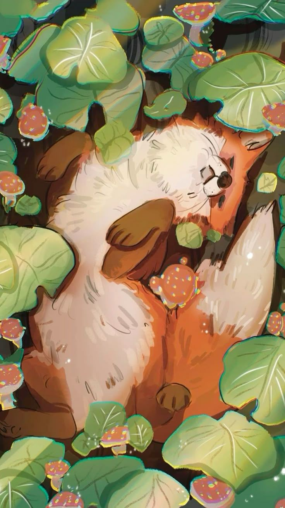

Kawaii Craft blends centuries-old Japanese traditions with modern cuteness. It’s a soft pastel twist on pottery, textiles, dolls, fans, stationery, and more — each piece bursting with charm and personality. Our creations are lovingly handmade in Japan, combining traditional craftsmanship with playful aesthetics. From delicate brush strokes to hand-tied ribbons, every detail is infused with care, creativity, and a sprinkle of whimsy. Whether you're decorating your home or gifting a smile, Kawaii Craft brings joy, nostalgia, and a little magic into everyday life.
We draw from Wabi-sabi’s quiet beauty in imperfection and the cheerful heart of Harajuku’s vibrant streets. Our inspiration flows from delicate cherry blossoms, mischievous fox spirits, playful lucky cats, squishy mochi, and the ever-changing seasons of Japan. Each item we create carries a whisper of folklore, a touch of nostalgia, and a sprinkle of pastel magic. Whether it's a hand-painted teacup or a plush charm, everything has a little story — and a little sparkle. It's not just about cute — it's about meaning, memory, and the joy of finding wonder in small things.✨
Check out our seasonal picks! This spring, we’re loving bunny tea sets, peach-blossom lanterns, and sakura mobiles made from delicate rice paper. Each item is handmade, one of a kind, and full of charm and play. Our ceramics feature cute faces, pastel glazes, and whimsical shapes — perfect for everyday joy. And our plushies? Think tiny foxes, sleepy bunnies, and mochi-like softness you’ll want to hug all day.